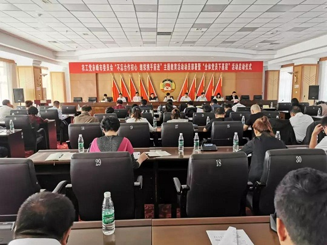
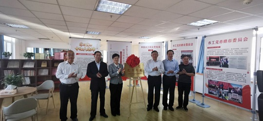
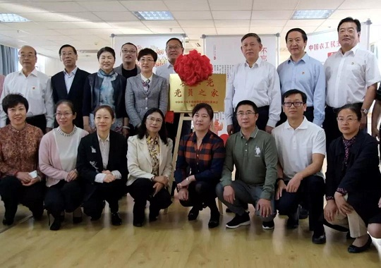

9月28日，农工党赤峰市委举行“不忘合作初心，继续携手前进”主题教育活动动员部署暨“全体党员下基层”活动启动仪式。农工党自治区委主委云治厚出席启动仪式并讲话。农工党赤峰市委主委、市政府副市长李艳茹主持启动仪式。市委统战部副部长乌力吉、农工党赤峰市委会班子成员和全体党员参加会议。

云治厚强调，要深刻认识主题教育活动的重要意义，把开展好主题教育活动作为首要政治任务。要加强组织领导、做好统筹协调、认真组织动员、深入贯彻落实，确保活动有组织、有计划、有分工、有重点、有实效。要将主题教育活动与日常工作有机结合，找准切入点、结合点、着力点，坚持问题导向，广泛听取意见，找出自身不足和工作短板，通过开展主题教育活动促进各项工作提质增效。
要将主题教育活动与农工党中央部署开展的“农工党廉洁风险预警提示活动”结合进来，将廉洁风险预警提示活动作为一项长期工作任务，常抓不懈、持之以恒。通过开展主题教育活动，让农工党员更加深刻地理解“为什么要自觉接受中国共产党领导、为什么要坚定不移地走中国特色社会主义道路”，切实增强“四个意识”、坚定“四个自信”、做到“两个维护”，让广大农工党员更加自觉地承担起中国特色社会主义事业亲历者、实践者、维护者、捍卫者的政治责任和历史担当，更好地用习近平新时代中国特色社会主义思想武装头脑、指导实践、推动工作，共同谱写中国共产党领导的多党合作事业新篇章。
会上传达了农工党中央和农工党自治区委有关文件精神，书面传达了《中国农工民主党内蒙古自治区委员会廉洁风险预警提示活动实施方案》，对开展“不忘合作初心，继续携手前进”主题教育活动方案和“全体党员下基层”活动方案作了情况说明，市委统战部副部长乌力吉对主题教育活动安排作出了具体要求。
启动仪式后，与会人员还进行了第一次主题教育集中学习，由市委党校副校长吕海晨作主题教育专题讲座。
启动仪式上，云治厚为农工党赤峰市委“全体党员下基层”医疗队授旗。
启动仪式前，云治厚、李艳茹还共同为农工党赤峰市委“农工党党员之家”揭牌。

